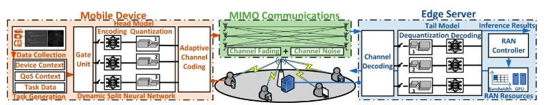
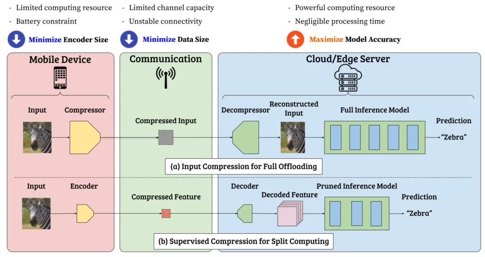
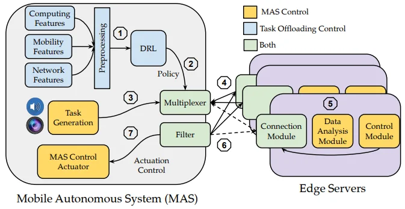
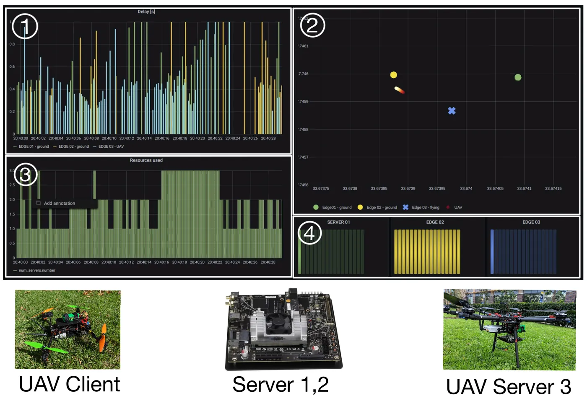
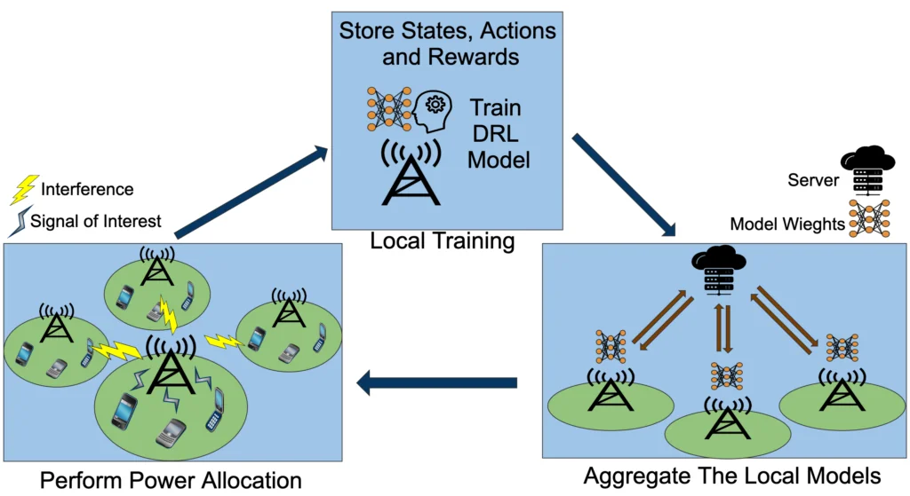
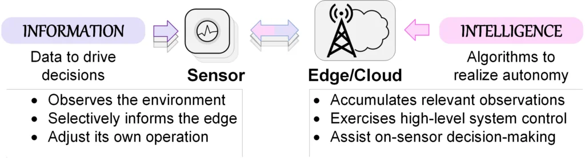

Research
Research areas
02
Wireless Communications for Edge Computing
When inference is split between a device and an edge server, the wireless link becomes part of the computation. This area designs communication schemes around what the neural network needs rather than around raw bits: semantic HARQ that protects the information a split DNN depends on, semantic multi-user MIMO and RAN slicing driven by dynamic split neural networks, hierarchical semantic communications for distributed sensor fusion, and beamforming computed through split computing.

Publications
- L. Qin, I. A. Harshbarger, L. Nasraoui, C. F. Chiasserini, M. Levorato. “Omnis: Semantic RAN Slicing via Dynamic Split Neural Networks.” IEEE INFOCOM, pp. 1–10, 2026.
- I. A. Harshbarger, L. Nasraoui, M. Levorato. “SHARQ: Semantic HARQ for Reliable Distributed DNN Execution.” IEEE MILCOM, pp. 527–532, 2025.
- S. L. G. Contreras, F. H. Khandaker, F. Restuccia, M. Levorato. “SOAR: Semantic Multi-User MIMO Communications for Reliable Wireless Edge Computing.” International Conference on Distributed Computing in Smart Systems (DCOSS), 2025.
- L. Qin, Y. Wu, S. Najeh, M. Levorato, C. F. Chiasserini. “HERACLES: Hierarchical Semantic Communications for Distributed Dynamic Sensor Fusion.” IEEE ICDCS, 2025.
- N. Bahadori, Y. Matsubara, M. Levorato, F. Restuccia. “SplitBeam: Effective and Efficient Beamforming in Wi-Fi Networks Through Split Computing.” IEEE ICDCS, 2023.
03
Split Computing
Deep neural network (DNN) models for image processing are split into a head, executed on the mobile device, and a tail, executed on an edge server. The goal is to reduce the capture-to-output delay when the wireless link to the edge server is poor or when network and compute conditions vary. The design balances three objectives: a small encoder on the device, less data transmitted to the edge server, and high model accuracy.

Publications
- Y. Matsubara, R. Yang, M. Levorato, S. Mandt. “SC2 Benchmark: Supervised Compression for Split Computing.” Transactions on Machine Learning Research, 2023.
- Y. Matsubara, M. Levorato, F. Restuccia. “Split Computing and Early Exiting for Deep Learning Applications: Survey and Research Challenges.” ACM Computing Surveys (CSUR), 2022.
- Y. Matsubara, D. Callegaro, S. Singh, M. Levorato, F. Restuccia. “BottleFit: Learning Compressed Representations in Deep Neural Networks for Effective and Efficient Split Computing.” IEEE WoWMoM, pp. 337–346, 2022.
- Y. Matsubara, R. Yang, M. Levorato, S. Mandt. “Supervised Compression for Resource-Constrained Edge Computing Systems.” IEEE/CVF Winter Conference on Applications of Computer Vision (WACV), pp. 2685–2695, 2022.
- D. Callegaro, Y. Matsubara, M. Levorato. “Optimal Task Allocation for Time-Varying Edge Computing Systems with Split DNNs.” IEEE GLOBECOM, pp. 1–6, 2020.
- Y. Matsubara, D. Callegaro, S. Baidya, M. Levorato, S. Singh. “Head Network Distillation: Splitting Distilled Deep Neural Networks for Resource-Constrained Edge Computing Systems.” IEEE Access, vol. 8, pp. 212177–212193, 2020. DOICode
- Y. Matsubara, M. Levorato. “Neural Compression and Filtering for Edge-Assisted Real-Time Object Detection in Challenged Networks.” 25th International Conference on Pattern Recognition (ICPR), pp. 2272–2279, 2021. Code
- Y. Matsubara, M. Levorato. “Split Computing for Complex Object Detectors: Challenges and Preliminary Results.” 4th International Workshop on Embedded and Mobile Deep Learning (EMDL ’20), pp. 7–12, 2020.
- Y. Matsubara, S. Baidya, D. Callegaro, M. Levorato, S. Singh. “Distilled Split Deep Neural Networks for Edge-Assisted Real-Time Systems.” Workshop on Hot Topics in Video Analytics and Intelligent Edges (HotEdgeVideo ’19), pp. 21–26, 2019. DOICode
04
Dynamic Edge Computing
Edge computing gives Mobile Autonomous Systems (MAS) access to heavier processing power, which can reduce delay and improve accuracy. The main challenges are the fluctuating quality of the wireless channel and the limited resources available on the device. Earlier work proactively looked for better conditions to execute local tasks; current work focuses on making better use of local resources through predicted task distribution.


Publications
- D. Callegaro, M. Levorato, F. Restuccia. “SmartDet: Context-Aware Dynamic Control of Edge Task Offloading for Mobile Object Detection.” IEEE WoWMoM, Belfast, June 2022.
- D. Callegaro, M. Levorato, F. Restuccia. “SeReMAS: Self-Resilient Mobile Autonomous Systems Through Predictive Edge Computing.” IEEE SECON, 2021.
- D. Callegaro, Y. Matsubara, M. Levorato. “Optimal Task Allocation for Time-Varying Edge Computing Systems with Split DNNs.” IEEE GLOBECOM, 2020.
- S. Baidya, et al. “Vehicular and Edge Computing for Emerging Connected and Autonomous Vehicle Applications.” 57th ACM/IEEE Design Automation Conference (DAC), 2020.
- D. Callegaro, M. Levorato. “Optimal Computation Offloading in Edge-Assisted UAV Systems.” IEEE GLOBECOM, 2018. DOI
- S. Baidya, Y. Chen, M. Levorato. “eBPF-Based Content and Computation-Aware Communication for Real-Time Edge Computing.” IEEE INFOCOM Workshops, 2018. DOI
- S. Baidya, M. Levorato. “Edge-Assisted Content and Computation-Driven Dynamic Network Selection for Real-Time Services in the Urban IoT.” IEEE INFOCOM Workshops, 2017. DOI
05
IoT for Healthcare
This project aims to improve the mental and physical well-being of pregnant women in underrepresented communities by combining in-home visits with wearable-based monitoring and interventions, with a focus on detecting and reducing stress.
The system is a closed loop: (1) health, movement, and context data are collected from phones and wearables and sent to a cloud server; (2) mental-health indicators are detected; (3) personalized interventions are delivered when indicators fall outside a standard range; and (4) the detectors improve over time through personalization and a small set of user-provided labels.
Labels come from surveys. Reinforcement-learning-based active learning chooses which samples users are asked to label, favoring samples that improve detection and that users are likely to answer quickly; user engagement is part of the reward design.
Publications
- A. Tazarv, S. Labbaf, S. M. Reich, N. Dutt, A. M. Rahmani, M. Levorato. “Personalized Stress Monitoring using Wearable Sensors in Everyday Settings.” 43rd Annual International Conference of the IEEE EMBC, pp. 7332–7335, 2021.
- A. Tazarv, S. Labbaf, A. M. Rahmani, N. Dutt, M. Levorato. “Data Collection and Labeling of Real-Time IoT-Enabled Bio-Signals in Everyday Settings for Mental Health Improvement.” ACM Conference on Information Technology for Social Good (GoodIT ’21), pp. 186–191, 2021.
06
Federated Learning for Wireless Systems’ Control
Next-generation (NextG) wireless networks need adaptive control that traditional model-based methods struggle to provide. Deep reinforcement learning (DRL) can provide it, but it needs large amounts of data, and centralized training requires heavy data exchange. We propose federated DRL (F-DRL), in which Radio Access Networks collaboratively train a shared neural network by exchanging model weights rather than raw data; it outperforms both fully distributed and centralized DRL. The next step is to extend the approach to heterogeneous networks that need personalization to their own environments.

Publications
- P. Tehrani, F. Restuccia, M. Levorato. “Federated Deep Reinforcement Learning for the Distributed Control of NextG Wireless Networks.” IEEE International Symposium on Dynamic Spectrum Access Networks (DySPAN), 2021.
07
Collaborative Classification
IoT systems combine sensors, which acquire data but have limited computing power, with edge and cloud processors, which analyze data and have a wider view of the system. We develop collaborative classification methods that let sensors decide on the fly which observations matter, guided by edge-assisted learning that adapts online, so that data processing in constrained IoT systems becomes efficient.

Publications
- I. Burago, M. Levorato. “Cloud-Assisted On-Sensor Observation Classification in Latency-Impeded IoT Systems.” IEEE International Symposium on Information Theory (ISIT), Paris, 2019. DOI
- I. Burago, M. Levorato. “Randomized Edge-Assisted On-Sensor Information Selection for Bandwidth-Constrained Systems.” Asilomar Conference on Signals, Systems, and Computers (ACSSC), Pacific Grove, 2018. DOI
- I. Burago, D. Callegaro, M. Levorato, S. Singh. “Intelligent Data Filtering in Constrained IoT Systems.” Asilomar Conference on Signals, Systems, and Computers (ACSSC), Pacific Grove, 2017. DOI
- I. Burago, M. Levorato, A. Chowdhery. “Bandwidth-Aware Data Filtering in Edge-Assisted Wireless Sensor Systems.” IEEE SECON, San Diego, 2017. DOI
- I. Burago, M. Levorato, S. Singh. “Semantic Compression for Edge-Assisted Systems.” Information Theory and Applications Workshop (ITA), San Diego, 2017. DOI